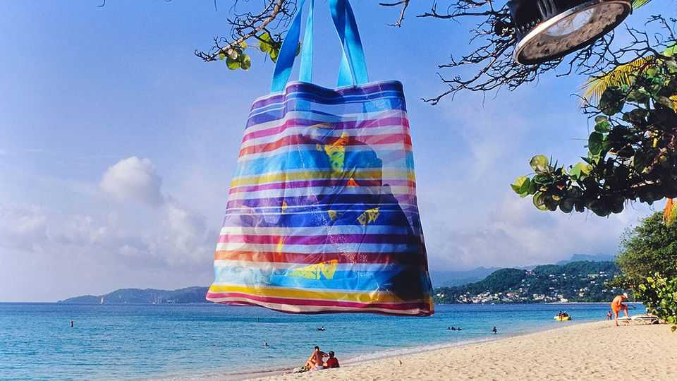

The biggest schools training America’s doctors are in the Caribbean
The industry has a seedy underbelly
July 16th 2026

Free shuttle buses run from St George’s University (SGU) to the white-sand beach at Grand Anse, the best in Grenada. American students in swimwear crowd the seafront bar. This post-exam ritual prompts envy from peers back home, says Daniel Nathan from Virginia. He was rejected by a few medical schools in the United States before he got his place at SGU, and didn’t fancy waiting a year to try again. “Grenada is pretty cool,” he says.
Mr Nathan is not alone. Seventy per cent of the students at SGU are American. Its intake is large, more than 1,000 students a year where the average American medical school admits 200. Its fees are higher than Harvard’s. Despite this, a growing cohort of would-be doctors is opting for island training. In 2010, Americans made up 48% of the graduates from Caribbean medical schools. By 2022 that share had risen to 67%. SGU provides more doctors to the United States than any other school in the world, including American ones. “The legacy system just simply does not produce enough doctors for the US health-care system,” says Scott Liles, who oversees Ross University School of Medicine in Barbados, where 98% of students are American or Canadian. Ross is the second-largest provider of doctors to the United States.
The love-in is mutual: SGU contributes a good chunk of Grenada’s GDP and is the largest private employer. Charitable donations endear it to the local population. “Everything depends on St George’s,” says Lincus Baptiste, a take-away vendor who has worked on the campus for 11 years.
Sadly, the prominence of Ross and SGU belies the existence of less scrupulous actors. The allure of the opportunity to practise medicine in the United States is a powerful incentive. There are around 100 medical schools in the Caribbean. On the other side of Barbados from Ross is Queen’s University College of Medicine. On the evening The Economist visited the site—a nondescript house at the top of a hill—no one was there. Discussion threads on Reddit, a chat board, tell of online-only courses and broken promises to provide legitimate qualifications. Queen’s website says it is listed on the World Directory of Medical Schools, but a listing does not imply accreditation. The school did not reply to requests for comment.
The path from the Caribbean to licensed doctor in the United States is complex. Before applying for a residency, a graduate must certify their qualification with the Educational Commission for Foreign Medical Graduates, an American NGO. It only certifies graduates of schools that have in turn been accredited by an agency approved by a committee of the US Department of Education, or its international equivalent.
But those agencies can operate from anywhere in the world. “It kind of breaks our brains a little bit to see an island that is in the Caribbean, that is a constituent country of the Kingdom of the Netherlands, getting its medical accreditation from Kyrgyzstan,” says Rosalie Hancock of Bellevue College in Washington state, co-author of a report on Caribbean medical schools. “You don’t really see that in any other field of education.”
This complexity can make it hard to identify illegitimate operators. Some students end up saddled with debt and no closer to being a doctor. Rashed, 32, from Trinidad, cried with happiness when he was accepted into All Saints University College of Medicine in St Vincent. He had been rejected by nearly 50 other medical schools. But the school, which later changed its name to Richmond Gabriel University, suddenly moved all courses online and told students that a new campus was opening in Curaçao. It never did. In April, one of the founders appeared in court in Chicago to face federal charges of fraud and embezzlement related to the city’s Loretto Hospital.
Rashed says he is “totally broke”. He has managed to enroll in a different, accredited medical school. His peers at SGU and Ross are a mainstay of America’s medical system. The allure of a career in medicine in the United States will probably get more like him into trouble. ■
Sign up to El Boletín, our subscriber-only newsletter on Latin America, to understand the forces shaping a fascinating and complex region.